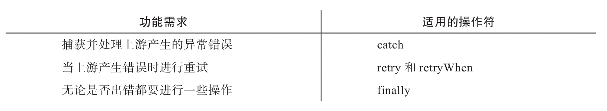

在这一章中，我们会介绍RxJS中的异常错误处理。我们会了解用try/catch方法（JavaScript中的传统方法）处理异常错误的局限，在异步处理中，try/catch方法派不上用场，使用回调函数或者Promise来处理异常虽然能够解决问题，但是依然存在诸多缺点。RxJS实践的是函数式编程，函数式编程有不同于传统命令式编程的特点，这就要求我们用一种全新的思维方式来进行异常错误处理。
下面列举了各种场景下适用的异常错误处理操作符：
